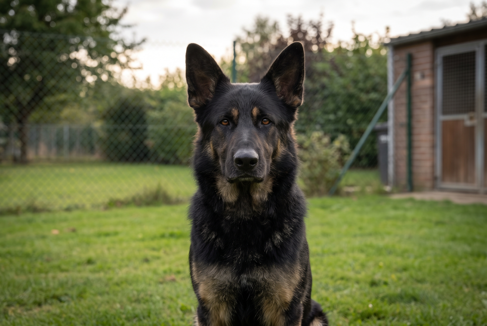
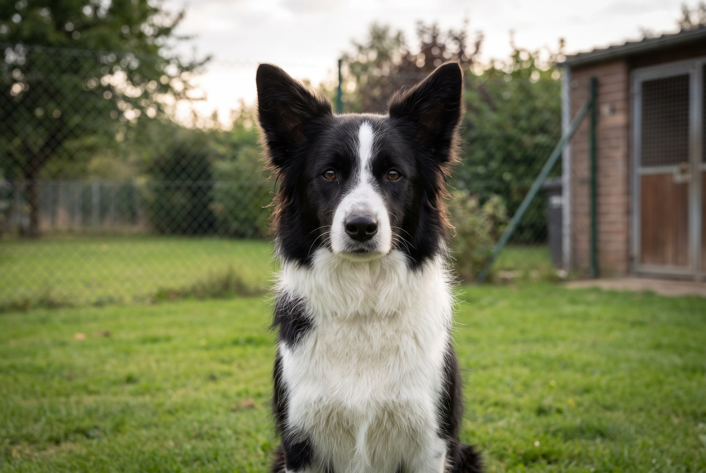
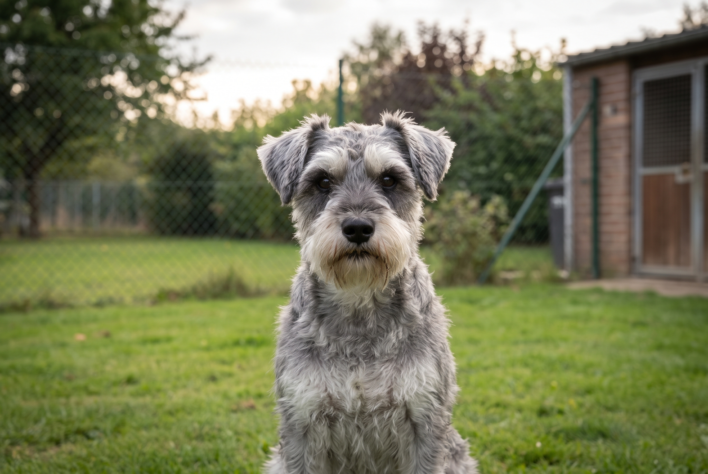
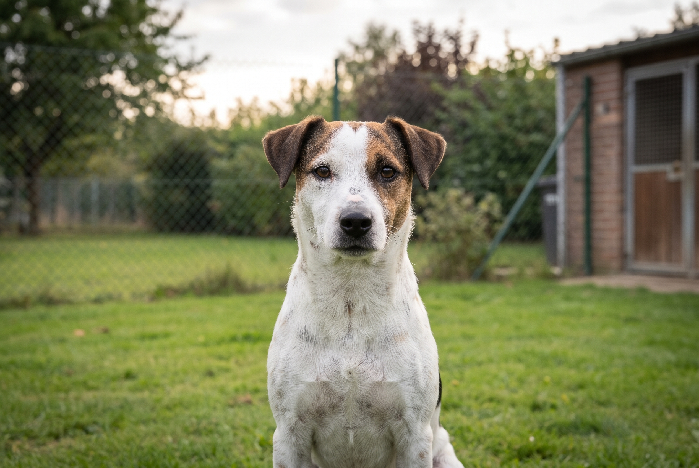
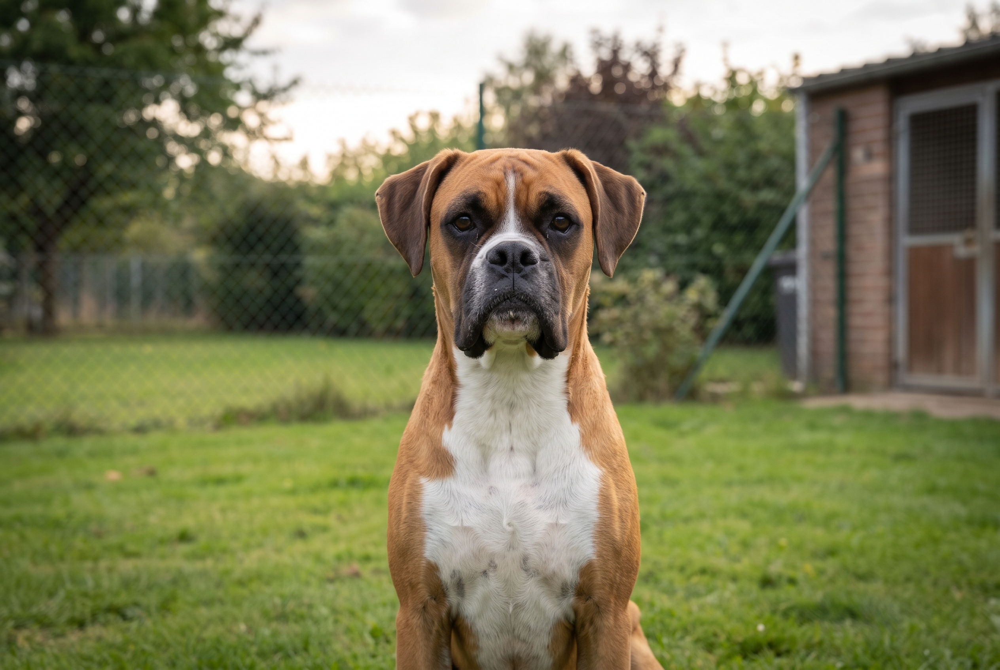
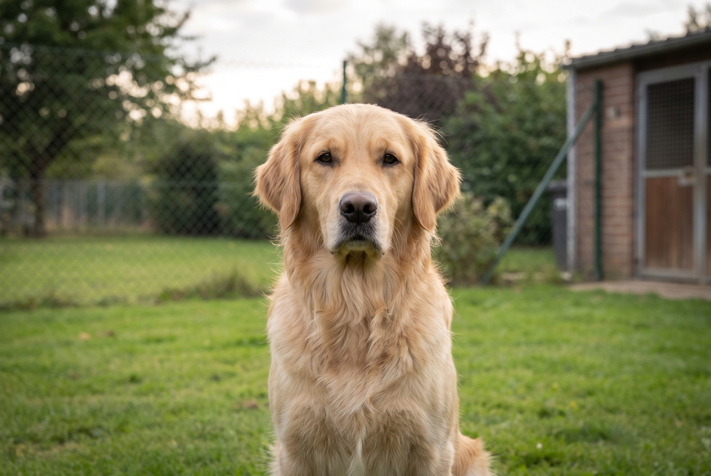
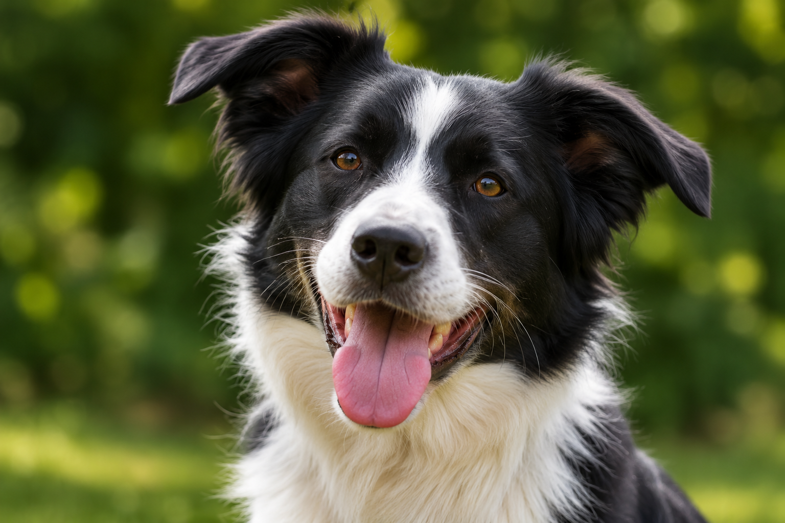
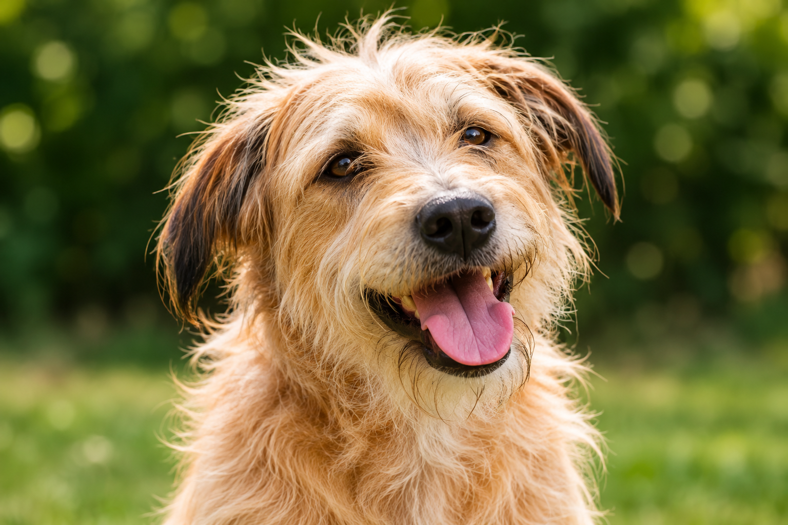

Offrez une nouvelle vie à un chien de refuge
Découvrez les chiens à adopter auprès de plusieurs refuges et associations, réunis sur une seule plateforme.

Echo
♂ 2 ans
Énergique et affectueux, Echo rêve d'une famille active.

Yama
♀ 3 ans
Douce et sociable, Yama s'entend très bien avec les autres chiens.

Oscar
♂ 5 ans
Calme et câlin, Oscar est un compagnon idéal au quotidien.

Nala
♀ 4 ans
Joueuse et curieuse, Nala adore les balades et les moments de jeu.

Apollo
♂ 3 ans
Un jeune chien plein d'ébergie prêt à découvrir la vie de famille.

Pixel
♂ 7 ans
Paisible et attachant, Pixel recherche un foyer calme.

Milo
♂ 8 ans
Energique et affectueux, Milo rêve d'une famille active.

Luna
♂ 3 ans
Douce et sociable, Luna s'entend très bien avec les autres chiens.

Pilou
♂ 8 ans
Calme et câlin, Pilou est un compagnon idéal au quotidien.